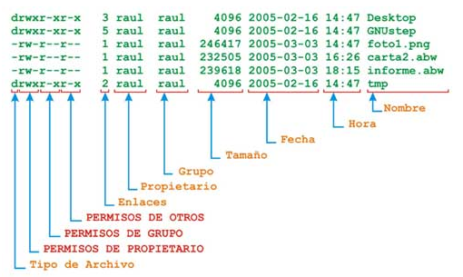
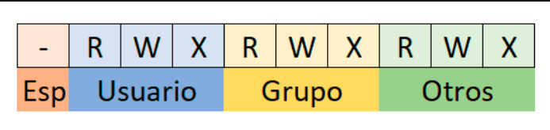
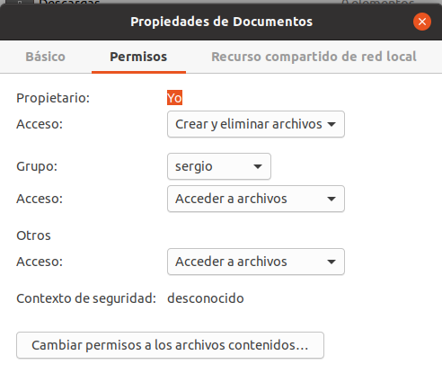

Sistema de Permisos UGO
El sistema de permisos UGO (User, Group, Other) es el mecanismo por defecto en GNU/Linux para controlar quién puede hacer qué con cada archivo y directorio del sistema.
¿Qué es UGO?
- User (Usuario): El propietario del archivo
- Group (Grupo): El grupo propietario del archivo
- Other (Otros): El resto de usuarios del sistema
Este sistema garantiza la seguridad y el aislamiento entre usuarios en un sistema multiusuario.
Conceptos Fundamentales
Propietarios de archivos: Todo archivo o directorio en Linux pertenece a:
- Un usuario propietario (por defecto, quien lo crea)
- Un grupo propietario (por defecto, el grupo principal de quien lo crea)
Además existen 3 tipos de permisos que se pueden otorgar:
| Permiso | Símbolo | Valor | Binario | En archivos | En directorios |
|---|---|---|---|---|---|
| Read | r |
4 | 100 | Ver el contenido | Listar el contenido (ls) |
| Write | w |
2 | 010 | Modificar/eliminar | Crear/eliminar archivos dentro |
| eXecute | x |
1 | 001 | Ejecutar el archivo | Entrar en el directorio (cd) |
Los permisos se definen para 3 entidades:
- Usuario propietario (u): El dueño del archivo
- Grupo propietario (g): Los miembros del grupo del archivo
- Otros (o): El resto de usuarios del sistema
El comando ls -l muestra información detallada incluyendo los permisos:
Salida ejemplo:
-rw-r--r-- 1 sergio profesores 1234 feb 10 10:30 documento.txt
drwxr-xr-x 2 sergio profesores 4096 feb 10 09:15 proyecto
-rwxr-xr-x 1 root root 456 feb 9 14:20 script.sh
{kind=link}

Desglose de la información: Tomemos como ejemplo:
| Posición | Contenido | Significado |
|---|---|---|
| Carácter 1 | - |
Tipo de archivo (- = archivo, d = directorio, l = enlace) |
| Caracteres 2-4 | rw- |
Permisos del usuario propietario (lectura y escritura) |
| Caracteres 5-7 | r-- |
Permisos del grupo propietario (solo lectura) |
| Caracteres 8-10 | r-- |
Permisos para otros usuarios (solo lectura) |
| Número | 1 |
Número de enlaces duros |
| Usuario | sergio |
Usuario propietario |
| Grupo | profesores |
Grupo propietario |
| Tamaño | 1234 |
Tamaño en bytes |
| Fecha | feb 10 10:30 |
Última modificación |
| Nombre | documento.txt |
Nombre del archivo |
Interpretar Permisos
{kind=link}

- Primer carácter: Tipo de archivo, puede tener los siguientes valores
| Símbolo | Tipo |
|---|---|
- |
Archivo regular |
d |
Directorio (directory) |
l |
Enlace simbólico (link) |
b |
Dispositivo de bloques (disco duro) |
c |
Dispositivo de caracteres (terminal) |
p |
Tubería con nombre (pipe) |
s |
Socket |
- Siguientes 9 caracteres: Permisos. Se dividen en 3 grupos de 3:
rwx r-x r--
└┴┘ └┴┘ └┴┘
│ │ └─── Otros (o) : lectura
│ └──────── Grupo (g) : lectura y ejecución
└───────────── Usuario (u): lectura, escritura y ejecución
Cada posición puede tener:
- El permiso correspondiente (
r,w,x) - Un guión
-si no tiene ese permiso
Combinaciones Típicas de Permisos
Para archivos
| Permisos | Octal | Significado | Uso típico |
|---|---|---|---|
--- |
0 | Sin permisos | Archivo bloqueado |
r-- |
4 | Solo lectura | Documentos protegidos |
rw- |
6 | Lectura y escritura | Archivos de datos |
r-x |
5 | Lectura y ejecución | Scripts de solo lectura |
rwx |
7 | Todos los permisos | Scripts/programas editables |
Para directorios
| Permisos | Octal | Significado | Resultado |
|---|---|---|---|
--- |
0 | Sin permisos | No puedes ni ver ni entrar |
r-- |
4 | Solo listar | Puedes ver contenido pero no entrar |
r-x |
5 | Leer y entrar | Puedes ver y acceder (común) |
rwx |
7 | Control total | Puedes hacer cualquier cosa |
-wx |
3 | Escribir y entrar | Buzón de entrega (no ver contenido) |
Directorio común
Para directorios, lo normal es tener r-x (5) o rwx (7). Sin el permiso x no puedes entrar dentro aunque tengas r.
Ejemplos Interpretados
Ejemplo 1: Archivo de texto
Interpretación:
- Tipo:
-(archivo regular) - Usuario (sergio):
rw-→ Puede leer y modificar - Grupo (profesores):
r--→ Pueden leer pero no modificar - Otros:
r--→ Pueden leer pero no modificar
Permisos en octal: 644
Ejemplo 2: Directorio de proyecto
Interpretación:
- Tipo:
d(directorio) - Usuario (sergio):
rwx→ Control total (crear, borrar, entrar) - Grupo (profesores):
r-x→ Pueden listar y entrar, pero no crear/borrar - Otros:
r-x→ Pueden listar y entrar, pero no crear/borrar
Permisos en octal: 755
Ejemplo 3: Script ejecutable
Interpretación:
- Tipo:
-(archivo regular) - Usuario (root):
rwx→ Puede modificar y ejecutar - Grupo (root):
r-x→ Puede leer y ejecutar, no modificar - Otros:
r-x→ Pueden leer y ejecutar, no modificar
Permisos en octal: 755
Ejemplo 4: Directorio privado
Interpretación:
- Tipo:
d(directorio) - Usuario (sergio):
rwx→ Control total - Grupo (sergio):
---→ Sin acceso - Otros:
---→ Sin acceso
Permisos en octal: 700 (directorio completamente privado)
Permisos Especiales
Además de rwx, existen permisos especiales:
SetUID (s en posición de ejecución de usuario)
Cuando un archivo tiene SetUID, se ejecuta con los permisos de su propietario, no del usuario que lo ejecuta.
Ejemplo:
- La
sen lugar dexindica SetUID - Cualquier usuario que ejecute
passwdlo hará como root - Necesario para que los usuarios puedan cambiar su contraseña
Seguridad
SetUID es peligroso si no se usa correctamente. Un programa con SetUID de root mal diseñado puede ser un agujero de seguridad.
SetGID (s en posición de ejecución de grupo)
Si se utiliza en archivos, el archivo se ejecuta con los permisos del grupo propietario.
Si se utiliza en directorios, los archivos creados dentro heredan el grupo propietario del directorio.
Ejemplo:
- La
sen lugar dex(posición grupo) indica SetGID - Archivos creados en
/compartidopertenecerán al grupoprofesores
Uso práctico
SetGID en directorios es útil para carpetas compartidas de proyectos donde varios usuarios del mismo grupo colaboran.
Sticky Bit (t en posición de ejecución de otros)
Solo el propietario de un archivo puede eliminarlo, aunque otros tengan permisos de escritura en el directorio.
Ejemplo:
- La
ten lugar dex(posición otros) indica Sticky Bit - En
/tmp, cualquiera puede crear archivos - Pero solo el propietario puede borrar sus propios archivos
Uso típico
El sticky bit es esencial en /tmp para evitar que usuarios borren archivos de otros.
Notación Octal de Permisos
Los permisos también se representan con números octales (base 8).
Conversión binario → octal. Cada permiso tiene un valor:
r(lectura) = 4w(escritura) = 2x(ejecución) = 1
Se suman para obtener el valor de cada grupo:
| Permisos | Cálculo | Octal | Binario |
|---|---|---|---|
--- |
0 + 0 + 0 | 0 | 000 |
--x |
0 + 0 + 1 | 1 | 001 |
-w- |
0 + 2 + 0 | 2 | 010 |
-wx |
0 + 2 + 1 | 3 | 011 |
r-- |
4 + 0 + 0 | 4 | 100 |
r-x |
4 + 0 + 1 | 5 | 101 |
rw- |
4 + 2 + 0 | 6 | 110 |
rwx |
4 + 2 + 1 | 7 | 111 |
Ejemplos de conversión
rw-r--r-- → 644
- Usuario:
rw-= 4+2+0 = 6 - Grupo:
r--= 4+0+0 = 4 - Otros:
r--= 4+0+0 = 4
rwxr-xr-x → 755
- Usuario:
rwx= 4+2+1 = 7 - Grupo:
r-x= 4+0+1 = 5 - Otros:
r-x= 4+0+1 = 5
rwx------ → 700
- Usuario:
rwx= 4+2+1 = 7 - Grupo:
---= 0+0+0 = 0 - Otros:
---= 0+0+0 = 0
Tabla rápida de permisos comunes
| Octal | Simbólico | Uso típico |
|---|---|---|
| 644 | rw-r--r-- |
Archivos de datos (dueño puede editar, otros leen) |
| 755 | rwxr-xr-x |
Directorios y ejecutables (todos pueden usar) |
| 700 | rwx------ |
Archivos/directorios privados |
| 666 | rw-rw-rw- |
Archivo editable por todos (raro, inseguro) |
| 777 | rwxrwxrwx |
Control total para todos (peligroso) |
| 600 | rw------- |
Archivo privado (solo dueño puede leer/escribir) |
Gestión de Permisos desde Terminal
chmod - Cambiar permisos
Modifica los permisos de archivos y directorios.
Sintaxis
Dos formas de especificar permisos
Usa letras: u (user), g (group), o (other), a (all)
Operadores:
+: Añadir permiso-: Quitar permiso=: Establecer permiso exacto
Opciones de chmod
| Opción | Descripción |
|---|---|
-R |
Recursivo (aplica a todo el contenido) |
-v |
Verbose (muestra cambios) |
-c |
Solo muestra archivos que cambian |
Ejemplos prácticos
¿Simbólica u octal?
- Simbólica: Mejor para cambios pequeños (
u+x,g-w) - Octal: Mejor para establecer permisos completos (
755,644)
Uso de permisos 777 - PROHIBIDO
A menudo, hay usuarios que se esfuerzan en demostrar que no están controlando la situación y aplican permisos 777 totales a todo. En nuestro curso, esto estará prohibido salvo casos extremos o indicaciones del profesor.
Asignar SetUID, SetGID y Sticky Bit
Existen dos formas de aplicar estos permisos, tal como sucede con los permisos estándar.
Para usar permisos especiales en modo octal, añadimos una cuarta cifra a la izquierda de las tres habituales (dueño, grupo, otros).
- SetUID:
chmod 4755 archivo - SetGID:
chmod 2755 archivo - Sticky Bit:
chmod 1777 directorio - Combinados: Si quieres SetUID (4) y SetGID (2), sumas ambos:
chmod 6755 archivo.
Se utilizan las letras s para SetUID/SetGID y t para el Sticky Bit.
- SetUID:
chmod u+s archivo - SetGID:
chmod g+s archivo - Sticky Bit:
chmod o+t directorio
Aquí tienes una propuesta de nota técnica, redactada de forma clara y profesional, para que tus alumnos de DAM entiendan esta importante excepción de seguridad en Linux:
NOTA TÉCNICA: El 'Muro de Seguridad' en Scripts
Es fundamental entender que, aunque el comando chmod nos permita asignar bits especiales a cualquier archivo, el Kernel de Linux se comporta de forma distinta según el tipo de archivo:
- SetUID (s) en archivos: * Binarios (Compilados): Funciona perfectamente. El programa se ejecuta con los privilegios del dueño.
-
Scripts (Bash, Python, etc.): NO funciona. Por motivos de seguridad, Linux ignora el bit SetUID en archivos de texto interpretados para evitar ataques de suplantación (como las race conditions). Si un alumno de Sergio ejecuta un script de Pepe, el proceso seguirá siendo de Sergio.
-
SetGID (s) y Sticky Bit (t) en archivos:
-
Al igual que el SetUID, se suelen ignorar en scripts por las mismas razones de seguridad.
-
SetGID (s) y Sticky Bit (t) en DIRECTORIOS:
- ¡AQUÍ SÍ FUNCIONAN SIEMPRE! A diferencia de los archivos, en los directorios estos bits no afectan a quién "ejecuta" nada, sino a cómo se gestionan los archivos dentro:
- El SetGID asegura que los nuevos archivos hereden el grupo del directorio.
- El Sticky Bit asegura que solo el dueño pueda borrar su archivo.
chown - Cambiar propietario
Cambia el usuario y/o grupo propietario de archivos y directorios.
Sintaxis
Requiere sudo
Solo root puede cambiar el propietario de archivos. Necesitas usar sudo.
Ejemplos
chgrp - Cambiar grupo
Cambia solo el grupo propietario (alternativa a chown :grupo).
Sintaxis
Ejemplos
Gestión de Permisos desde Entorno Gráfico
También puedes gestionar permisos desde el explorador de archivos.
Acceso
- Botón derecho sobre el archivo/directorio
- Propiedades
- Pestaña Permisos
{kind=link}

Las opciones disponibles son:
| Opción | Permisos equivalentes |
|---|---|
| Ninguno | --- |
| Solo lectura | r-- |
| Lectura y escritura | rw- |
Si marcas "Permitir ejecutar este archivo como un programa":
- Solo lectura →
r-x - Lectura y escritura →
rwx
Si hacemos lo mismo para establecer Acceso a la carpeta tenemos las siguientes opciones:
| Opción | Permisos | Significado |
|---|---|---|
| Ninguno | --- |
No puedes acceder |
| Solo listar archivos | r-- |
Puedes ver qué hay pero no entrar |
| Acceder a los ficheros | r-x |
Puedes ver y acceder |
| Crear y eliminar archivos | rwx |
Control total |
Casos Prácticos
Caso 1: Script para todos
Caso 2: Carpeta compartida de equipo
# Crear carpeta
sudo mkdir /compartido/proyecto_x
# Cambiar propietario y grupo
sudo chown :proyecto_x /compartido/proyecto_x
# Permisos: equipo puede todo, otros nada
sudo chmod 770 /compartido/proyecto_x
# SetGID para que archivos hereden el grupo
sudo chmod g+s /compartido/proyecto_x
# Verificar
ls -ld /compartido/proyecto_x
# drwxrws--- 2 root proyecto_x 4096 feb 10 12:00 /compartido/proyecto_x
Caso 3: Documento confidencial
Caso 4: Buzón de entregas
# Crear directorio
sudo mkdir /entregas
# Propietario: root, Grupo: alumnos
sudo chown root:alumnos /entregas
# Permisos: alumnos pueden crear, no listar
sudo chmod 730 /entregas
# Sticky bit: solo el creador puede borrar sus archivos
sudo chmod +t /entregas
# Verificar
ls -ld /entregas
# drwx-wx--T 2 root alumnos 4096 feb 10 12:00 /entregas
Caso 5: El Proyecto Compartido. Uso de SetGID
Queremos que sergio, juan y pepe trabajen en una carpeta común llamada /prog/proyecto_dam. Lo ideal es que cualquier archivo que cree cualquiera de ellos pueda ser editado por los otros miembros del grupo sin tener que cambiar los permisos a mano cada vez.
-
Primero creamos el entorno. Supondremos que el grupo común se llama
programadores.# 1. Crear el grupo y añadir a los usuarios groupadd programadores usermod -aG programadores sergio usermod -aG programadores juan usermod -aG programadores pepe # 2. Crear la carpeta del proyecto mkdir -p /prog/proyecto_dam # 3. Cambiar el grupo dueño de la carpeta a "programadores" chown :programadores /prog/proyecto_dam # 4. Dar permisos totales al grupo y activar el SetGID (el 2 a la izquierda) chmod 2770 /prog/proyecto_dam -
Ahora, veamos qué pasa cuando los usuarios crean archivos dentro. Sergio crea un archivo:
Si Sergio crea un archivo fuera de esa carpeta, el archivo pertenecería a su grupo primario (
sergio). Pero mira qué pasa dentro: -
Juan crea otro archivo:
Resultado:
- El sistema "obliga" a que todo lo que nazca dentro de esa carpeta pertenezca al grupo
programadores. - Como los tres pertenecen a ese grupo, todos pueden leer y editar los archivos de los demás (siempre que el
umasko elchmodden permiso al grupo, claro).
Errores Comunes
Error 1: Directorio sin x
Error 2: Script sin x
Error 3: Permisos 777
Nunca uses 777
chmod 777 es un grave error de seguridad. Solo úsalo en casos muy específicos y temporales.
Resumen de Comandos
| Comando | Función | Ejemplo |
|---|---|---|
ls -l |
Ver permisos | ls -l archivo.txt |
chmod |
Cambiar permisos | chmod 755 script.sh |
chown |
Cambiar propietario | sudo chown user:group file |
chgrp |
Cambiar grupo | sudo chgrp grupo archivo |
Tabla de Permisos Rápida
| Octal | Simbólico | Usuario | Grupo | Otros | Uso común |
|---|---|---|---|---|---|
| 644 | rw-r--r-- |
rw- | r-- | r-- | Archivos de datos |
| 755 | rwxr-xr-x |
rwx | r-x | r-x | Ejecutables, directorios |
| 700 | rwx------ |
rwx | --- | --- | Privado |
| 777 | rwxrwxrwx |
rwx | rwx | rwx | Todo para todos (peligroso) |
| 600 | rw------- |
rw- | --- | --- | Archivos sensibles |
Ejercicios Prácticos
Ejercicio 1: Permisos básicos
- Crea un archivo
test.txt - Establece permisos
rw-r--r--(644) - Verifica con
ls -l - Intenta ejecutarlo (debe fallar)
- Añade permiso de ejecución al propietario
Ejercicio 2: Directorio compartido
- Crea un directorio
equipo - Establece permisos 770
- Cambia el grupo a un grupo existente
- Aplica SetGID
- Verifica que funciona
Ejercicio 3: Privacidad
- Crea un archivo
secreto.txt - Escribe contenido sensible
- Establece permisos 600
- Intenta leerlo desde otro usuario
- Verifica que solo tú puedes acceder